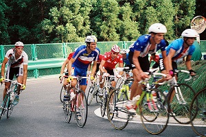
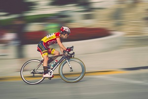
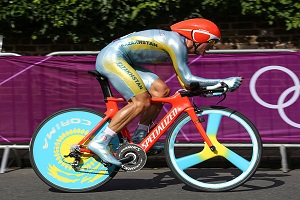
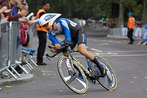
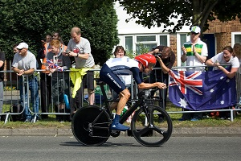

Road racing is held on paved roads and is the most popular professional form of bicycle racing, in terms of numbers of competitors, events and spectators. The most common competition format are mass start events, where riders start simultaneously and race to set finish point. Stage races or "tours" take multiple days, and consist of several mass-start or time-trial stages ridden consecutively.
Professional racing is most popular in Western Europe, centered on France, Spain, Italy and the Low Countries. Since the mid-1980s the sport has diversified with professional races now held on all continents of the globe. The biggest event is the Tour de France, a three-week race that can attract over 500,000 roadside supporters a day.



An individual time trial is a race against the clock. Riders covered the same distance leaving at 2 minute intervals. Winning depends on strength and endurance, and not on help provided by teammates and other riders creating a slipstream. The opening stage of stage race will often be a short individual time trial called a prologue.
A time trial bicycle is designed for use in an individual or team time trials raced on roads. Since the cyclist in a time trial is not permitted to ride in the slipstream of other cyclists, reducing aerodynamic drag of the bicycle and rider is critical. Triathlon handlebars provided a low tucked position that is aerodynamic while providing good stability. Time trial races tend to be much shorter than road races, so comfort is less of an issue. Also, control of the bike is less important, since there is little chance of bumping another rider and the courses tend to be less technical with little hill climbing, turns or descents.